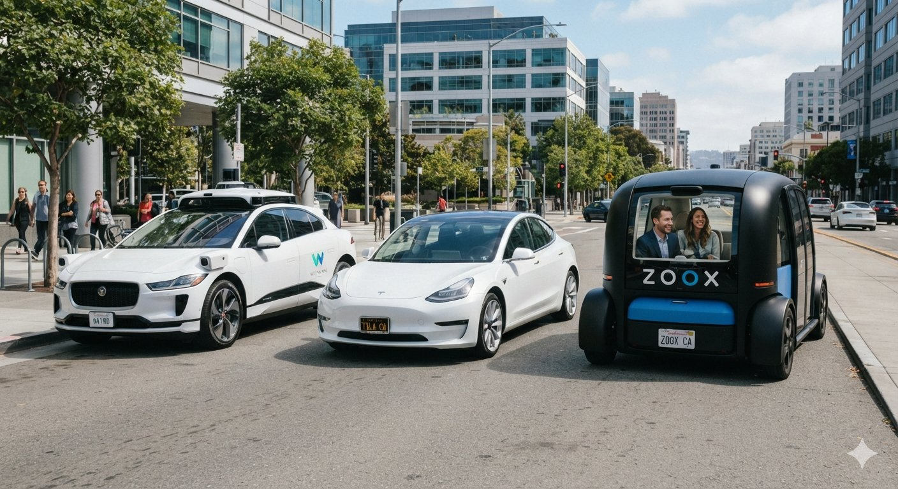

Hi! Welcome to my blog. I write about technology that I find interesting.
My driverless cars post | About Me
October 20, 2026
I think driverless cars are pretty interesting. The idea of getting into a car and letting it take you somewhere sounds like something from a movie. But companies are already working on this in different ways.

Different ideas for what cars could look like.
For this post I looked at Waymo, Tesla and Zoox, which is owned by Amazon. They all want cars to handle driving, but they are not doing it in exactly the same way.
One important thing: a car helping a driver is different from a car that can drive without one. Some systems still need a person watching the road all the time.
Waymo uses cameras, lidar and radar together. Cameras help it see things like traffic lights. Lidar uses laser light to measure distances. Radar also helps measure how far away things are and how they are moving.
So instead of depending on just one kind of sensor, it combines different information about the road.
Waymo runs driverless rides in supported areas. In February 2026, it announced the start of fully autonomous operations with its sixth-generation Driver. The company said it was working on lower costs and handling more weather conditions.
I like the idea of having several ways to check what is happening. But expanding a service to more places still takes a lot of testing and work.
Read about Waymo's technology
Waymo's February 2026 update
Tesla puts a lot of emphasis on cameras and software that learns from driving examples. Its neural networks process video to understand roads, vehicles and other objects. Computers inside the car run these systems.
Having lots of cars on the road gives Tesla many different situations to learn from. I think the difficult part is making sure the system handles unusual situations well too.
Tesla's consumer Full Self-Driving (Supervised) still needs an attentive driver. It does not make the car autonomous.
Tesla also has a separate Robotaxi service, described in its July 2026 update. That does not mean every Tesla that someone owns can drive without supervision.
Tesla's technology page
What FSD (Supervised) requires
Tesla's July 2026 update (PDF)
Amazon owns Zoox. Its robotaxi is built for passengers from the beginning, with no steering wheel or pedals. People sit facing each other instead of all facing the same way.
Zoox uses cameras, lidar, radar and long-wave infrared sensors. Amazon also provides computing services that Zoox uses for things like training models and storing sensor data.
This is the one that looks most different to me. If nobody has to drive, the inside of the car can be arranged differently. But Zoox also has to build and maintain these special vehicles, which sounds like a big job.
See the Zoox robotaxi
Read about Zoox and Amazon's computing services
| Key Features | Waymo (Sensor-Rich L4) | Tesla (Vision-Only L2/L4) | Zoox (Purpose-Built L4) |
|---|---|---|---|
| Primary Sensors | LiDAR + Radar + Cameras (Multi-Sensor Fusion) | Optical Cameras Only (End-to-End AI Vision) | LiDAR + Radar + Cameras (Symmetrical Array) |
| Mapping Reliance | High-precision HD 3D Maps (Controlled Geofencing) | Dynamic Real-time AI Vision (Scalable Worldwide) | High-precision HD 3D Maps (Dense Urban Focus) |
| Hardware Fail-Safes | Full Redundancy (Steering, Braking, Compute) | Minimal Hardware Redundancy (Focus on Neural Net Safety) | Full Redundancy (Across Custom Chassis) |
| Vehicle Design | Standard Retrofitted Passenger Cars | Standard Production Consumer Cars | Symmetrical, Bidirectional Pod |
All of them need good software, reliable vehicles and plenty of testing. I don't think counting sensors is enough to decide which one is better.
These are my thoughts, not a timetable from the companies. I think the next improvements will be about making the cars more dependable in everyday situations.
A car that drives well on a clear road is impressive. But I would also want to know what happens when a road is blocked or the pickup spot is crowded.
I don't think they will appear everywhere at once. My guess is that services will grow in certain areas first and slowly cover more journeys.
For me, driverless cars will feel normal when people choose them because they are convenient, rather than just to try something new. There is still a lot to get right before that happens everywhere.
I am curious to see how these three approaches turn out. Maybe there will be room for more than one of them.
Hi! I am Tejaswi Neelapalem doing my undergrad at IIIT Lucknow(CSAI) with enrollment number lci2026038 who likes learning about new technology. I made this blog to share things I find interesting and explain them in a simple way.
I am still learning HTML, so this page is quite simple. Thanks for reading my post!
Copyright © 2026 My Technology Blog. All rights reserved.